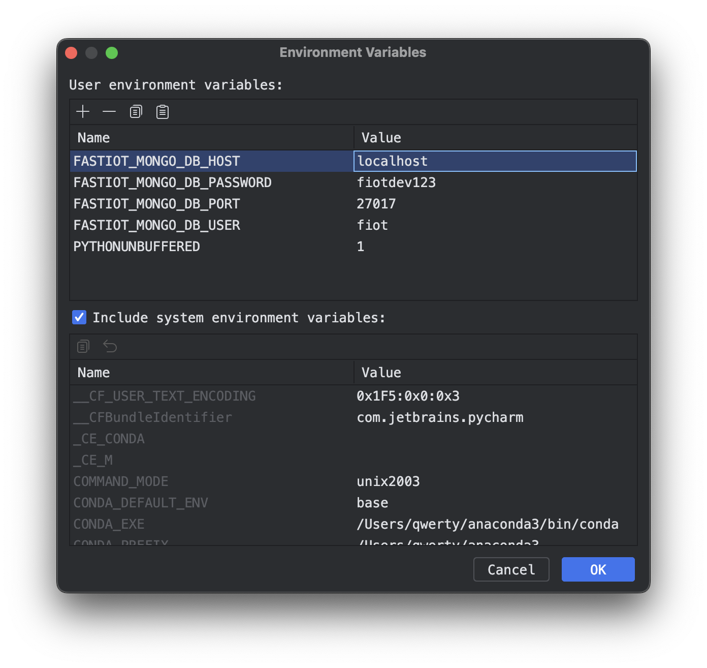
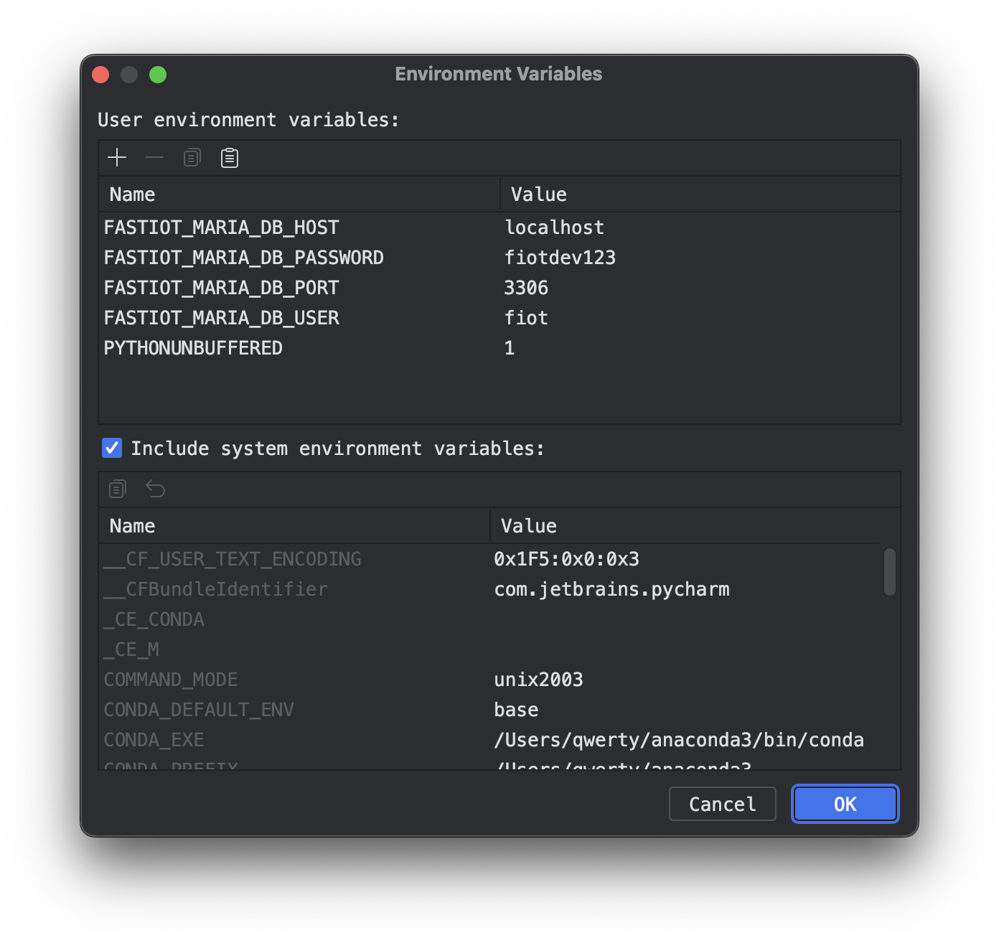

Important
FastIoT is developed to run on linux. MacOS seems to work as well. Windows might work by using WSL2.


KIOPTIPACK – DESIGN UND PRODUKTION#
Holistic AI-based optimization of plastic packaging with recycled content#
In the future, packaging will need to contain a minimum of 30 percent recycled materials. In order to use recycled materials safely on an industrial scale, material quality must first be standardized. This is where the KIOptiPack — Design and Production innovation lab comes in. The goal is to roll out, validate and put into application practical AI-based tools for successful product design and quality production methods for plastic packaging made from a high proportion of recycled materials. This links up with the development of a central network platform for value creation engineering. The tools developed in the project target the entire value chain. This includes secondary raw materials, material and packaging development, process design and packaging production, as well as waste collection and treatment and consumption.
You can find more information about the project on the KIOptiPack Website
About this Github Repository: Blueprints#
In the context of the KIOptiPack project, the IoT platform FastIoT is developed ad used as a core piece of the software technology-stack. This repository contains so-called Blueprints, which are essentially code templates to realize Machine-Learning use-cases with the FastIoT framework. The goal of Blueprints is provide a starting point for developers to quickly implement Machine-Learning use-cases with FastIoT.
FastIoT ist a micro-service-architecture and uses a Nats as a message broker to communicate between services. This architecture which introduces some peculiarities in the implementation of Machine-Learning use-cases, especially when it comes to the training of models. The Blueprints in this repository are designed to provide Blueprints as code templates to speed up the development of Machine-Learning use-cases with FastIoT, especially for transferring and preprocessing data, training, storing and serving the models.
Available Blueprints#

in the picture above you can see the concept of the Blueprints for Machine Learning. The Blueprints are divided into three main parts:
Database-Service#
This service is responsible for storing the data and providing it to the other services. It is an abstraction layer between the data and the services that need it. This service is responsible for storing the data and providing it to the other services. It is an abstraction layer between the data and the services that need it. Putting all the DB interactions in one service enables to implement drop in replacements for different databases. So the end user can choose between different databases without changing the other services.
Data-Procesing-Service#
This service is responsible for processing the data. Todo: detailed description
Model-Training-Service & Model-Serving-Service#
These services are responsible for training the model and serving it. Todo: detailed description
Quickstart#
Pre-Requisites#
Python 3.9 or higher installed (in general it’s recommended to use a environment manager like conda or venv)
Docker installed (for example by installing Docker Desktop)
Development Setup#
The initial setup of the project is shown in the following video:

NOTE: to run database services you need to have a running database service (for example MariaDB or MongoDB) you need to provide some environment variables, that are used to connect to the database. NOTE: MongoDB needs to have a username and password set up, even if your MongoDB instance does not require authentication.
Clone this repository
If working with PyCharm you have to Mark the generated src directory as “Sources Root”.
Install the required dependencies with
pip install -r requirements.txtRun
mlflow server --host 127.0.0.1 --port 8080Run
fiot configRun
fiot integration_testStart the individual services with by running the run.py files in the respective directories (for example
python src/database_mongo/run.py <<your enviorment vasriables>>)
here are screenshots of an example configuration for the environment variables in PyCharm:
 
Roadmap#
Completed Tasks#
[x] Conceptualization of the Blueprints
[x] ML-Flow integration for Experiment-Tracking
[x] WandB-Integration for Experiment-Tracking
[x] MongoDB-Integration for ML-Data-Storage
[x] MariaDB-Integration for ML-Data-Storage
[x] Blueprint for Pytorch-Model-Training
In Progress#
[ ] Blueprint for Tensorflow-Model-Training
[ ] Blueprint for LightGBM-Model-Training
Planned#
[ ] AutoMl-Blueprint
[ ] Blueprint for Federated Learning
[ ] Blueprint for Hyperparameter-Optimization
[ ] CLI-Tool for Blueprint-Generation
Links#
Contact Us#
If you have any questions, feel free to reach out to us:
Alexander Nasuta - Tel: +49 241 80 91158 - Email: mailto:alexander.nasuta@ima.rwth-aachen.de
Aymen Gannouni - Tel: +49 241 80 91139 - Email: mailto:aymen.gannouni@ima.rwth-aachen.de